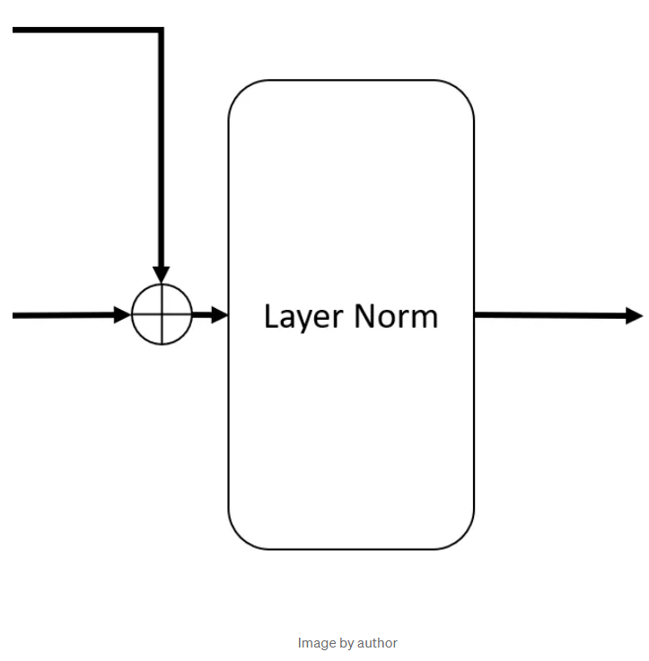

文章阅读一：使用中学数学从头开始理解LLM
本文中，我们讨论大型语言模型（LLMs）如何工作，从头开始 ———— 假设你仅知道两个数的加法和乘法。这篇文章是完全独立的。我们从用纸笔构建一个简单生成式AI开始，然后了解我们需要的一切，一边对现代LLMs和Transformer架构有一个深刻理解。本文将剔除机器学习中所有花里胡哨的东西，尽可能简单的表示一切：数字。我们仍然会在您阅读专业术语内容时，指出这些东西的名称，以束缚你的想法。
从加法/乘法到当今最先进的人工智能模型，在不假定其他知识或参考其他来源的情况下，这意味着我们涵盖了大量的内容。这不是一个玩具 LLM 解释–理论上，一个有决心的人可以从这里的所有信息中重新创建一个现代 LLM。我删掉了所有不必要的字/行，因此这篇文章并不适合浏览。
我们将涵盖哪些内容？
- 一个简单的神经网络
- 如何训练这些模型？
- 这一切如何生成语言的？
- 什么使得LLM工作得这么好？
- 嵌入
- 子词分词器
- 自注意力
- Softmax
- 残差链接
- 层归一化
- Dropout
- 多头注意力
- 位置嵌入
- GPT架构
- transformer架构
让我们开始步入正轨。
首先需要注意得是神经网络仅可以接受数字作为输入，且仅可以输出数字。绝无例外。艺术之处在于弄清如何将你得输入作为数字提供，以一种实现你得目的得方式解释输出数字。最终，构建神经网络, 它接收你提供的输入，并给出你想要的输出（给出你为这些输出选择的解释）。让我们看看如何通过数字加法和乘法来得到Llama3.1这样的东西。
一个简单的神经网络
让我们研究一个可以对物体对象进行分类的神经网络：
- 可用对象数据：主色（RGB）和体积（毫升）
- 分类信息：叶子或花朵
叶子和太阳花的数据看起来如下：
| 叶子 | 花朵 | |
|---|---|---|
| R (红) | 32 | 241 |
| G (绿) | 107 | 200 |
| B (蓝) | 56 | 4 |
| Vol(体积) | 11.2 | 59.5 |
现在，构建一个神经网络进行分类。我们需要决定输入和输出的解释。我们的输入已经是数字，可以直接输入到神经网络。我们的输出是两个对象，叶子和花朵，神经网络不能输出（不是数字）。让我们看看这里可以使用的几个方案：
- 我们可以让神经网络输出一个数字。如果数字是正，我们说它是叶子，如果是负，我们说它是花朵。
- 或者，我们让神经网络输出两个数字。我们解释第一个数字为叶子，第二个是花朵的数字，我们说选择数值较大的那个。
两种方案均允许神经网络输出数字，使我们可以解释为叶子或花朵。这里我们选择第二种，因为它可以很好地推广到接下来我们讲的其他内容。以下是一个使用该方案进行分类的神经网络。

蓝色圆圈像这样：(32 * 0.10) + (107 * -0.29) + (56 * -0.07) + (11.2 * 0.46) = — 26.6
一些术语：
神经元/节点：圆圈中的数字
权重：线上的彩色数字
层：神经元的集合称为层。你可以认为这个网络有3层：输入层，有4个神经元；中间层，有3个神经元；和输出层，有2个神经元。
为了计算该网络的预测/输出（称为前向传播），从左开始。我们在输入层神经元有可用数据。为了前进到下一层，将圆圈上的数字乘以相应神经元的对的权重，然后加起来。我们在上面演示了蓝色和黄色圆圈数学。运行整个网络，我们看到输出层的第一个数字的输出较大，因此我们解释它为“神经网络分类这些（RGB，Vol）值为叶子”。一个训练良好的神经网络可以接收多个（RGB，Vol）输入，并正确分类物体。
模型对于叶子或花朵是什么没有概念，对（RGB，Vol）也没有概念。它的工作是接收刚好4个数字，并刚好给出2个数字。我们将4个输入数字解释为（RGB，Vol），也是我们决定看看输出数字，并推断若第一个数字较大则为叶子等等。最终，我们还要选择正确的权重，使得模型能接受输入数字，并给出正确的2个数字，这样当我们解释它们时，我们获得了我们想要的解释。
这样做的一个有趣的副作用时，你可以利用同一神经网络，不是输入RGB，Vol，而是输入其他4个数字，如云量、湿度等，并解释输出的两个数字为“一小时后晴天”或“一小时后雨天”，然后如果有校准后的权重，可以获得几乎同样的网络同时做两种事情 — 分类叶子/花朵和预测一小时后会下雨。该神经网络仅给出两个数字，无论解释为分类或预测，还是其他全都由你决定。
为了简化而忽略的内容（可以随意忽略，不影响理解）：
-
激活层：该神经网络缺少一个关键的东西“激活层”。这是一个很奇特的词，表示我们获取每个圆圈中的数字，并对其应用非线性函数（RELU是一个常用的函数，它接受数字，如果为负，则将其设为0，若为正则保持不变）。所以，基本上在我们上面的例子中，我们将中间层的两个数字（-26.6和-47.1）替换为0，然后到下一层进一步处理。当然，我们需要重新训练权重，使得神经网络再次有用。没有激活曾，网络中所有加法和乘法将坍缩到单一层。此时，可以直接将绿色圆圈写为RGB的加权和，且不再需要中间层。类似于(0.10 * -0.17 + 0.12 * 0.39–0.36 * 0.1) * R + (-0.29 * -0.17–0.05 * 0.39–0.21 * 0.1) * G等。若存在非线性，这样通常是不可行的。激活层有助于网络处理更为复杂的情况。
-
偏置：神经网络通常还包含另一个有关每个节点的数字，该数字简单加到乘积上来计算节点值，该数字成为偏置。因此，若顶端蓝色节点的偏置是0.25，那么节点值将为： (32 * 0.10) + (107 * -0.29) + (56 * -0.07) + (11.2 * 0.46) + 0.25 = — 26.35。参数这个词通常用于表示模型中所有这些非神经元或节点的数字。
-
Softmax：我们通常不象我们模型中所示直接解释输出层。我们将数字转为概率（即，使得全部数字是正的，且和为1）。若，输出层中的所有数字已经为正，可以实现次目的的一种方式是将输出层中每个数字都处于该层中所有数字之和。不过，通常使用的 “softmax ”函数可以处理正负数。
如何训练这些模型？
上述示例中，我们神奇地拥有允许我们输入数据到模型中，并得到一个好输出的权重。但这些权重如何确定的？设置这些权重（参数）的过程称为”模型训练“，我们需要一些训练数据来训练模型。
假设我们由一些数据，其中有输入，并且已知每个输入相应的输出是叶子或花朵，这是我们的”训练数据“，并且由于我们有每组（R,G,B,Vol）数字的叶子/花朵标签，这是”标签数据“。
这是它的工作原来：
- 始于随机数字，即，设置每个参数、权重为随机数字
- 现在，我们输入数据，已知其对应叶子（R=32, G=107, B=56, Vol=11.2）。假设我们想要在输出层获得较大的对于叶子的数字。假设我们想要对应于叶子的数字为0.8，对应于花朵的为0.2。（如上面例子所示，但这些是展示训练的说明性数字，事实上，我们不想要0.8和0.2。事实上这些是概率，这里不需要，我们想要它们成为1和0）
- 我们知道输出层中我们想要的数字，和我们从随机选择的参数中获得的数字（与我们想要的数字不同）。目前，所有输出层中的神经元，让我们看看我们想要的数字和已有数字的确保。然后把差异相加。即，若输出层两个神经元中是0.6和0.4，那么我们得到：（0.8-0.6）=0.2和（0.2-0.4）=-0.2，因此总差异为0.4（加之前忽略负号）。我们称它为”损失“。理想情况我们想要损失接近0，即，我们想要”最小化损失“。
- 一旦我们有了损失，我们可以轻微改变每个参数，来确定是否增加或减小它将增加或减小损失。这称为参数的“梯度”。然后，我们可以在损失下降的方向少量移动每个参数（梯度方向）。一旦我们轻微移动了所有参数，损失应该更低了
- 持续重复该过程，将会降低损失，最终有一组被“训练”的权重/参数。这整个过程成为“梯度下降”。
几点说明：
- 通常会有多个样本，因此为一个样本轻微改变权重来最小化损失时，可能让另一个样本的损失更坏。处理方式是定义损失为所有样本上的平均损失，然后再平均损失上采取梯度。这减少了整个训练数据集上的平均损失。每个这样的循环成为一个“epoch"。然后可以持续重复回合，找到减少平均损失的权重。
- 我们不需要实际”移动权重“来计算每个权重的梯度——我们可以从公式中对它进行推断（即，若最后一步的权重为0.17，且神经元的值为正，我们想要输出为一个更大的数字，增加该数字到0.18将会有帮助）。
实际中，训练深度网络是一个困难和复杂的过程，因为梯度很容易失控，在训练中趋于0或无穷大（称为”梯度消失“和”梯度爆炸“问题）。我们在这里谈到的损失的简单定义是完全正确的，但很少使用，因为有更好的功能形式可以很好地用于特定目的。现代模型包含数十亿参数，训练模型需要大量计算资源，及相应问题（内存限制、并行化等）。
这一切如何生成语言的？
请记住，神经网络接收一些数字，基于被训练参数进行一些数学，并给出一些其他数字。一切都是关于解释和训练参数（即，将它们设置为一些数字）。若我们可以将那两个数字解释为”叶子/花朵“或者”一小时后下雨或晴天“，我们也可以将它们解释为”句子中下一个字符“。
但，英文中不止2个字母，因此必须扩展输出层中神经元的数量，比如，到英语中的26个字母（我们还可以添加一些符号，如空格、句号等）。每个神经元可以对应于一个字符，我们看看输出层中的（26或左右）个神经元，说，输出层中对应于最高数字神经元的字母是输出字符。现在，我们有一个伸进网络可以接受一些输出，输出一个字符。
若我们将我们网络中的输入替换成这些字符：”Humpty Dumpt"，请它该网络出一个字符，将其解释为“神经网络建议的我们刚输入的序列中的下一个字符”。我们可以将权重设置的足够好，使其输出“y” —— 从而完成 “Humpty Dumpty”。剩下一个问题，我们如何将这些字符列表输入到神经网络？我们的网络只能接受数字！！
一个简单的方法是为每个字符分配一个数字。例如，a=1, b=2等等。现在我们可以输入“humpty dumpt”，训练它给出“y”。我们的网络看起来如下：
好了，现在我们可以通过提供神经网络一个字符列表来预测下一个字符。我们可以使用该事实来构建一个完整序列。例如，一旦预测到"y"，我们将y添加到已有字符列表，将新列表再次输入网络，预测下一个字符。若我们训练良好，它将给我们一个空格等等诸如此类。最后，我们应该能够迭代生成“Humpty Dumpty sat on a wall”。我们有了生成式人工智能。而且，我们现在有一个能够生成语言的网路！现在，没有人真的会输入随机分配的数字，我们会看到更多合理的方案。如果你等不及了，请随时查看附录中的独热编码（one-hot encoding）部分。
聪明的读者注意到实际上我们不能将“Humpty Dumpty"输入到网络，因为如图所示，它的输入层仅有12个神经元，每个神经元对应于”humpty dumpt"（包括空格）中的每个字符。那么，我们如何在下一次传递中输入y。在那里放置第13个神经元将需要我们改变整个网络，这是不可行的。解决方案很简单，让我们剔除“h”,并输入最近的12个字符。那么，我们将输入“umpty dumpty",网络将预测一个空格。然后我们输入”mpty dumpty"，它将产生s等等。它看起来像这样：

最后一行，我们向模型中仅输入“sat on the wal"，丢掉了很多信息。那么当今最新、最大的网络是做什么的呢？或多或少正是如此。我们可以输入到神经网络的输入长度是固定的（由输入层的大小决定）。这被称为”上下文长度“——提供给网络进行未来预测的上下文。现代网络可以拥有非常大的上下文长度（数千单词），这很有帮助。有一些方法输入无限长度序列，但这些方法的性能虽然令人印象深刻，但已被其他大（但固定）上下文长度的模型超越。
细心读者注意到的另一件事是，我们对于同一个单词的输入和输出有不同的解释。例如，当输入”h“我们简单表示为数字8，但在输出层，我们没要求模型输出一个单个数字（8是h，9是i等），而是让模型输出26个数字，然后我们看那个最大，然后若第8个数字最大，我们将其解释为”h"。为何我们不在两端使用同样、一致的解释？我们可以，只是就语言而言，让自己自由选择不同的解释，就更有可能建立更好的模型。而恰好，目前已知的对输入和输出的最有效解释是不同的。事实上，我们在这个模型中输入数字的方法并不是最好的方法，我们很快就会看到更好的方法。
什么使得LLM工作得这么好？
一个字符接一个字符地生成“Humpty Dunpty sat on the wall"，与现代LLMs的能力相去甚远。从我们上面讨论的简单生成式人工智能到类人机器人，有许多不同和创新之处。让我们一起来看看：
嵌入（Embeddings）
记得我们说过，我们输入字符到模型的方式不是最好的方式。我们仅仅任意为每个字符选择了一个数字。若是我们可以分配更好的数字从而训练更好的网络？我们如何找到这些数字？这里有一个技巧：
当我们训练上述模型，我们的方式是移动权重，看是否最终给我们更小的损失。然后缓慢、递归地改变权重。每个回合我们会：
- 输入输入
- 计算输出层
- 与我们理想值对比，计算平均损失
- 调整权重，并重新开始
这个过程中，输入是固定的。当输入为(RGB,Vol)时这是合理的。但我们现在输入的数字，对于a,b,c等是任意选择的。如果每次迭代除了一点点地移动权重，我们还移动输入，看看是否可以通过使用不同的数字代表”a”等来获得更低的损失？我们肯定会减少损失，并使模型变得更好（这就是我们在设计中将 a 的输入转向的方向）。基本上，梯度下降不仅适用于权重，也适用于输入的数字表示，因为无论如何，它们都是任意选取的数字。这被称为“嵌入”。他是输入到数字的映射，正如你刚才所见，它需要被训练。训练嵌入的过程与训练参数很相似。不过，这样做的一大好处是，一旦你训练好了一个嵌入模型，你就可以在另一个模型中使用它。请记住，您将始终使用相同的嵌入来表示单个标记/字符/单词。
我们讨论了每个字符只有一个数字的嵌入。然而，实际中嵌入有不止一个数字。因为单个数字难以捕捉丰富的概念。回顾我们叶子和花朵的例子，每个物体目标有四个数字（输入层大小）。这四个数字中的每一个都表达了一种属性，模型能够利用所有这些属性有效地猜出物体。若我们仅有一个数字，例如颜色的红色（R）通道，这可能对于模型来说可能要难得多。这里我们尝试捕获人类语言——我们需要不止一个数字。
因此不同于使用单个数字表示每个字符，我们可以使用多个数字来捕捉丰富性？假设我们为每个字符分配大量数字。我们称有序数字集为“向量”（有序，即每个数字都有一个位置，若我们交换了两个数字的位置，将得到不同向量。这是我们叶子／花朵数据的例子，若我们交换了叶子的R和G数字，我们将得到不同颜色，不再是同样的向量）。向量的长度就是它包含多少数字。我们将为每个字符分配一个向量。出现两个问题：
－ 若我们分配每个字符一个向量而不是一个数字，我们现在如何将“humpty dumpt”传入到网络？答案很简单。假设我们为每个字符分配一个10个数字的向量。那么输入层不是有12个神经元，而是120个神经元，因为“humpty dumpt”中12个字符的每一个拥有10个数字的输入。现在我们只需将神经元放在一起就可以了。
- 我们如何找到这些向量？值得庆幸得是，我们刚学习了如何训练嵌入数字。训练嵌入向量没有什么不同。现在有120输入而不是12，但你所需要做得
是移动它们，看看怎样可以最小化损失。然后，取出前10个，那是对应于“H”得向量。
所有嵌入向量必须长度相同，否则我们没有办法将全部字符组合输入到网络。即，“humpty dumpt”和下一迭代中得”umpty dumpty"——两种情况我们输入12个字符到网络，如果12个字符中得每一个不是用长度为10的向量表示，我们将不能可靠地将它们全部输入到一个120长的输入层。我们可视化这些嵌入向量：

我们称相同大小的向量的有序集为矩阵。上面的矩阵称为嵌入矩阵。你只需告诉它一个与字母相对应的列数，然后查看矩阵中的这一列，就能得到用来表示该字母的向量。这可以更广泛地应用于嵌入任何任意的事物集合——你只需要在矩阵中设置与你所拥有的事物相同数量的列。
子词分词器
目前，我们一直将字符作为语言的基础构建块。这具有它的限制。神经网络权重必须完成大量繁重的工作，它们必须理解相邻出现的某些字符（即单词）序列，并与其他单词相邻出现。如果我们直接分配嵌入给单词，让网络预测下一个单词。网络除了数字什么都不理解，因此我们可以分配一个长度为10的向量给每个单词，“humpty",“dumpty”,“sat”,"on"等。然后，我们仅输入两个单词，它给我们下一个单词。”Token“是我们嵌入然后输入模型的单位的术语。目前我们的模型使用字符作为tokens，现在我们提出使用整个单词作为token（当前也可以使用整个语句或段落作为tokens）。
单词标记化对我们的模型有一个深远的影响。英语中有超过18万单词。根据我们的输出解释方案，每个可能的输出都有一个神经元，因此输出层需要数十万个神经元，而不是 26 个左右。随着现代网络取得有意义结果所需的隐藏层规模的扩大，这个问题变得不那么紧迫了。然而，值得注意的是，由于我们独立对待每个单词，每个单词从随机数字嵌入开始——非常相似的单词（如，”cat“和”cats“）开始时没有关系。你应该希望这个单词的嵌入应用彼此接近——毫无疑问模型将学习到。但，我们可否利用这种明显的相似性来快速开始启动并简化问题？
是的，我们可以。目前，语言模型中最常见的嵌入方案是将单词分解成子单词，然后嵌入其中。在毛的例子中，我们将cats分为两个标记，”cat“和”s“。现在对于模型来说，较为容易来理解其他相似单词后的”s“。这还减少了我们所需的标记的数量（sentencepiece是一种常见的分词器，其词汇量选项为英语中的几万个单词和几十万个单词）。分词器接收输入文本（如”Humpty Dumpt"），将其分割为标记，并给出相应的数字，以便在嵌入矩阵中查找该标记的嵌入向量。例如，“humpty dumpty"的例子中，如果我们使用字符级别的分词器，我们按照上面图片排列我们的嵌入矩阵，那么分词器将首先切分humpty dumpty为字符[‘h’,‘u’,…‘t’]，然后返回数字[8,21,…20]，因为需要查找嵌入矩阵的第8列来获得’h’的嵌入向量（嵌入向量是将提供给模型的输入，而不是数字8，与之前不同）。矩阵中列的排列完全不相关，我们可以分配给‘h’任一列，只要我们每次输入‘h’查找到相同的向量就好。分词器仅仅给我们提供给任意数字使得查找容易。我们真正需要它的主要任务是将语句分为标记。
通过嵌入和子词分词，模型可能是这样的：
接下来的几节将介绍语言建模领域的最新进展，以及使 LLM 达到今天这样强大功能的原因。不过，要理解这些内容，您需要了解一些基本的数学概念。下面就是这些概念：
- 矩阵和矩阵乘法
- 数学中方程的一般概念
- 数字的幂级数（例如，a3 = aaa）
- 样本均值、方差和标准差
我在附录中添加了这些概念的摘要。
自注意力
目前，我们仅看到一个简单的神经网络架构（称为前馈网络），包含多个层，每层都是与下一层全连接的（即，相邻层中的任意两个神经元线性连接），且，它仅连接到下一层（即，层1和层3之间没有线）。然而，如你所想，没有什么可以阻止我们移除或建立其他连接。甚至建立更加复杂的架构。我们来探讨一个特别重要的结构：自注意力。
如果你看看人类语言的结构，我们想要预测的下一个单词将依赖于所有之前的单词。然而，它们可能依赖于之前的一些单词比其他的更深。例如，如果我们尝试预测“Damain had a secret child, a girl, and he had written in his will that all his belongs, along with the magical orb, will belong to __"中的下一个单词。这里单词可能是”her“或者”him“，它尤其依赖于语句中更早的单词：girl/boy。
好消息是，我们的简单前向传播模型连接上下文中的所有单词，因此它可以学习重要单词的近似权重，但有个问题，我们模型中连接特定位置的权重在前向传播层中是固定的（对于每个位置）。若重要单词一直在同样的位置，它将学习合适的权重。然而，下一个预测的相关词可能在系统中的任何位置。我们可以套用上面的句子，在猜测 “her”或”his“时，有一个非常重要的词，无论出现在句子的哪个地方，都是男孩/女孩。因此，我们需要权重不仅依赖于位置，也依赖于该位置的上下文。我们如何做到这样？
自注意力的作用类似于将每个单词的嵌入向量加在一起，但不是直接相加，而是应用一些权重到每个单词。因此如果humpty、dumpty,sat的嵌入向量分别为 、 、 ，那么在把它们相加之前，每个向量都乘以一个权重（数字）。类似于 output = 0.5 + 0.25 + 0.25 ， 其中output是自注意力输出。如果我们将权重写为 、 、 ，那么output = + + ，那么我们如何找到这些权重 、 、 ？
理想情况下，我们想要这些权重依赖于我们加起来的向量——如我们所见其中一些比另一些更重要。但是对谁更重要？对于我们要预测的单词。因此我们也想权重依赖于我们要预测的单词。现在，有个问题，我们当然不知道我们要预测的单词，在我们预测它之前。因此，自注意力使用紧邻我们要预测的单词之前的单词，即，语句中可用的最后一个单词（我真的不知道为什么是这样，为什么不是别的，但深度学习中的很多事情都是反复试验的，我怀疑这样做效果很好）。
很好，那么我们想要这些向量的权重，我们想要每个权重依赖于我们聚合的单词，和紧邻我们预测的之前的单词。基本上，我们想要方程 其中 是我们将要权衡的单词， 是我们语句中最后一个单词（假设我们仅有3个单词）。现在，实现这一目标的简单方法是为 x1 建立一个向量（我们称之为 ），为 建立一个单独的向量（我们称之为 ），然后简单地求取它们的点积。我们如何获得向量 和 ？我们建立一个微小的单层神经网络，从 到 （或 到 ， 到 ，以此类推）。而且，我们构建另一个网络，从 到 等。使用矩阵符号，我们基本上可以得出权重矩阵 和 使得 ， 等。现在我们可以求取 和 的 点积获得一个标量，那么 。
自注意力中还会发生一件事，那就是我们不会直接求出嵌入向量本身的加权和。相反，我们取的是该嵌入向量的某个 “值 ”的加权和，该值由另一个小型单层网络获得。这意味着，与 和 类似，我们现在也有一个词 的 ，我们通过矩阵 获得它，即 。然后对这个 进行汇总。因此，如果我们只有 3 个单词，并试图预测第四个单词，情况就会是这样：

加法符号表示简单的向量加法，意味着它们有相同长度。最后一个没有在这里展示的修改是标量 、 、 等无需和为1。如果我们需要它们的权重，我们应该将它们加起来。所以这里我们将应用一个熟悉的技巧，使用softmax函数。
这就是自注意力。还有交叉注意力，其中 来自最后一个单词，但k和v可以来自另一个句子。这在翻译任务中很有价值。现在，我们知道了什么是注意力。
这整个东西现在可以放在一个盒子里，称为“自注意力模块”。基本上，这个自注意力模块接收嵌入向量，并输出任意用户选择长度的单个输出向量。该模块有三个参数： 、 、 ——无需更加复杂。机器学习文献中有很多这种模块，它们通常用图表中的方块表示，上面有它们的名字。类似于：
你会注意到的关于自注意力的一件事情是其中位置看起来似乎不相关。我们使用全部相同的W，因此转换Humpty和Dumpty实际上没有什么影响——所有数字最终是一样的。这意味着虽然注意力可以找出它们关注什么，这不依赖于单词位置。然而，我们确实知道英语中单词位置是重要的，我们通过让模型对单词位置有一些了解来改进性能。
因此，当注意力使用时，我们通常不会直接将嵌入向量输入到自注意力模块。稍后，我们将看到“位置编码”是如何在输入到注意力模块之前加到嵌入向量的。
预启动注意事项：对于那些不是第一次阅读自注意力的读者，将会注意到我们没有引用任何K和Q矩阵，或者应用掩码等。这是因为这些董事是模型通常如何训练而产生的实现细节。批量数据输入到模型，同时训练来从humpty预测dumpty, 从humpty dumpty预测sat等等。这是关于获得高效的问题，并不影响解释和模型输出，我们这里选择忽视训练效率技巧。
Softmax
我们在第一节中简要讨论了softmax。softmax尝试解决的问题是：在我们的输出解释中中，我们有与神经元同样多的选择，我们想要王略选择其中之一。我们之前说过，我们解释网络的选择为最高值神经元。然后我们计算损失作为我们想要的理想值和网络提供值之间的差异。但我们想要的理想值是什么？在叶子/花朵的例子中，我们设为0.8。但为何是0.8？为何不是5，或者10，或者1千万？对于那个训练示例，越高越好。理想上我们想要无限大。现在我们会让问题变得棘手——所有损失都是无限大，我们通过移动参数（梯度下降）最小化损失的计划失败了。我们该如何处理？
我们可以做的一件简单的事情就是限制我们想要的值。比如说在0和1之间？这会使得所有损失都是有限的，但现在我们遇到的问题是当网络超调时，会发生什么。比说，一种情况下，（叶子,花朵）的输出是（5，1），另一种情况是（0，1）。第一种情况做出了正确的选择，但损失是糟糕的！好，现在我们需要一种方法也把最后一层的输出转换到（0，1）范围，并保持其大小顺序。我们可以使用任何函数（数学中一个函数就是简单将一个数字映射到另一个数字——输入一个数字，输出另一个数字——它的规则基于给定输入将会输出什么）来完成该工作。一种可能的选择是logistic函数（见下图），它将所有数字映射到（0，1）之间的数字，并保持顺序：
现在，我们最后一层每个神经元都有一个0和1之间的数字，我们可以通过设置正确的神经元为1，其他的为0，来计算损失，并计算其与神经元提供给我们的的差异。这可以工作，但我们能否做到更好？
回到我们“Humpty dumpty"的示例，假如，我们尝试逐字符生成dumpty，当预测dumpty中的m时，我们的模型产生了一个错误。它没有给我们最后一层中将m作为最高值，而是u为最高值，但m紧随其后。
现在，我们可以继续使用”duu“，尝试预测下一个字符等等，但模型的置信度将会很低，因为没有许多来自”humpty dudu"的好的连续。另一方面，“m”紧随其后，因此我们也给“m”一个机会，预测接下来的几个字符，看看会发生什么？或许它给我们一个更好的单词？
因此，我们这里讨论的不是仅仅盲目选择最大值，而是尝试几个。有什么好方法来做到？好吧，我们必须给每个一个机会——比如，我们50%的可能选择第一个，25%选择第二个等等。这是一种好的方式。但或许我们希望机会依赖于底层模型的预测。如果模型在此处预测m和n的值十分接近（相较于其他值）——那么或许一个接近50-50的机会探索它们是个好注意？
那么我们需要一个好规则来接收所有这些数字，并将其转为机会。这就是softmax做的事情。它们上面logistic函数的泛化，但具有额外的功能。若提供10个任意数字——它将给你10个输出，每个都在0和1之间，重要的是，所有10个数字加起来为1，因此我们可以解释它们为机会。你将会发现几乎所有语言模型中，sotmaxu作为最后一层。
残差链接
随着章节进展，我们慢慢改变了网络的可视化。我们现在使用盒子/块来表示特定概念。这种符号在表示特别有用的残差连接的概念是很有帮助的。让我们看看结合自注意力模块的残差连接：

我们将“输入”和“输出”作为方框使其更加简单，但这些仍然如上面所示，是神经元/数字的集合。
那么这里发生了什么？我们接收自注意力模块的输出，在传入下一个模块之前，我们将原始输入加到它上。第一件需要注意的事情是自注意力模块输出的维度与输入的维度相同。这不是问题，因为我们注意到自注意力的输出由用户决定。但为何这样做？我们在这里不会涉及全部细节，但关键的事情是随着网络更深（输入和输出之间有更多层）它训练的难度更大。残差连接已经证明有助于这些训练挑战。
层归一化
层归一化是一个相当简单的层，它接收输入其中的数据，并将其归一化，通过减去均值并除以标准差实现（或者更多点，如我们下面所见）。例如，如果我们直接在输入后面应用层归一化，它将接收输入层中的所有神经元，然后计算两个统计数字：它们的均值和它们的标准差。假设均值为M，标准差是S，那么层归一化所作的事情是接收这些神经元的每一个，并将其替换为(x-M)/S，其中x表示任意给定神经元的原始值。
那么这如何有帮助呢？它基本上可以稳定输入向量，帮助训练深度网络。一个担忧是，通过正则化输入，我们是否移除了其中一些有用信息，或许对学习我们的目标是有帮助的？为解决这个问题，层归一化层有一个缩放和一个偏置餐宿。基本上，对每个神经元，只需将它乘以一个标量，然后加上一个偏置。这些标量和偏置值是可以训练的参数。这允许网络学习一些可能对预测有价值的变化。而且，由于这些是仅有的参数，LayerNorm层没有太多训练参数。整体类似于：
缩放和偏置是训练参数。你可以看到层归一化是一个相对简单的模块，其中每个数字仅按点操作（初始化均值和标准差计算之后）。让我们想起激活层（如，RELU），主要区别在于这里我们有一些可训练参数（由于简单的逐点运算，因此比其他层要少得多）。
标准差是衡量值分布程度的统计指标，比如，若所有值都相同，标准差为0。一般来说，如果每个值都与这些相同值的平均值相差很远，那么标准偏差就会很大。对于数字集合 ， ， (N个数字) ，计算标准差的公式类似于：从每个数字中减去均值（这些数值得均值），然后对N个数字中得每一个答案进行平方。将所有这些平方后得N个数字加起来，然后除以N。现在对答案开平方。
预启动注意事项：经验丰富得ML专家将会注意到，这里没有讨论批归一化。事实上，我们甚至没有在这篇文章中接收批次得概念。在大多数情况下，我认为批次是另一种与理解核心概念无关的训练加速器（也许批归一化除外，我们在这里不需要批归一化）。
Dropout
Dropout是一个简单但有效得避免模型过拟合得方法。过拟合是指，当在训练数据上训练模型时，它在数据集上工作良好，但在模型未曾见过的样本上泛化不好。有助于避免过拟合的技术被称为“正则化技术”，dropout是其中之一。
如果训练一个模型，它可能在数据上犯错，或以特定方式过拟合。训练另一个模型，它可能一样，只是以不同的方式。如果训练多个这类模型并平均它们的输出会怎样？这通常被称为“集成模型”，因此它们通过结合来自集成模型的输出来预测输出，集成模型一般比任一单独模型表现更好。
在神经网络中，你也可以这样做。你可以构建多个（稍微不同）的模型，然后结合它们的输出来获得一个更好的模型。然而，这样可能计算昂贵。Dropout是一种技术，它不需要构建集成模型，但确实抓住这种概念的一些本质。
这种概念是很简单的，通过在训练中插入一个dropout层，你所做的是，在该层与插入的dropout之间随机删除一定比例的直接神经元连接，考虑我们的初始化网络，在输入和中间层之间插入一个dropout 比例为50%的Dropout层，看起来类似于：
这迫使神经网络进行大量冗余训练。本质上，你在同时训练多个不同的模型——但它们共享权重。
为了进行推断，我们可以遵顼集成模型同样的方法。我们可以使用dropouts做出多个预测，然后合并它们。然而，由于计算敏感——而且由于我们的模型共享相同权重——为什么我们不能使用全部权重（不是一次使用权重的50%，我们一次使用全部权重）仅做一次预测。这应该能让我们大致了解集成所能提供的效果。
还有一个问题：模型用50%的权重训练，将会比使用全部权重有非常不同的中间神经元数量。这里我们想要的更多的是集成风格平均化。我们如何做到？好吧，一个简单的方式是简单接收所有权重，并将它们乘以0.5，因为我们现在使用了两倍的权重。这就是Dropout在推理过程中所作的事情。他会使用具有全部权重的全部网络，简单将权重乘以（1-p），其中p是删除概率。这已被证明是一个工作非常好的正则化技术。
多头注意力
这是transformer架构中的关键模块。我们已经看到注意力模块是什么。记住注意力模块的输出由用户决定，它是v的长度。基本上，多注意头是并行运行若干注意力头（它们接收同样的输入）。然后，我们接收它们的输出，简单连接它们。类似于：
记住，从 的箭头是线性层——每个箭头上有一个矩阵进行变换。为避免混乱没有展示它们。
这里发生的事情是：我们为每个头生成同样的key，query和values。但是然后我们在其上（分别针对每个k,q,v，以及分别针对每个头）应用线性变换，在我们使用这些k,q,v值之前。这个额外层没有在自注意力模块中。
顺便提一下，对我来说，这种创建多头注意力的方法有点出人意料。例如，为什么不为每个头创建单独的 、、 矩阵，而不是添加一个新层并共享这些权重呢？如果你知道，请告诉我，我真的不知道。
位置嵌入
我们已经在自注意力章节简单讨论使用位置编码的动机。这些是什么？虽然图片展示位置编码，但使用位置嵌入比使用编码更普遍。因此，这里我们讨论常见的位置嵌入，但附录中也涵盖了原始论文中使用的位置编码。位置嵌入与其他嵌入并无不同，除了不是嵌入单词词汇，我们嵌入数字1，2，3等。因此，这个嵌入是一个矩阵，它与单词嵌入同样的长度，每列对应一个数字。这就是它的全部。
GPT架构
我们开始讨论GPT架构。它用于大多数GPT模型（具有一些变化）。使用盒子符号，架构高层次上类似于：
至此，除了“GPT Transformer Block",所有其他模块都已经详细讨论。这里的+号只是意味着两个向量加到一起（这意味着两个嵌入必须同样大小）。让我们看看这个 GPT Transformer模块：
就这样了。它被称为”transformer"，因为它源自transformer，并且是transformer的一种——一种架构我们下一节将会看到。这并不影响理解，因为我们之前已经介绍过这里显示的所有构建模块。让我们回顾一下迄今为止我们所涉及的所有内容，从而建立起这种 GPT 架构：
- 我们见过神经网络接收数字，输出其他数字，并且有作为参数的权重可以被训练。
- 我们可以赋予这些输入、输出数字解释，给神经网络一个真实世界的意义
- 我们可以连接神经网络来创建更大的神经网络，我们称每一个为“模块”，使用方框表示使得图表容易。每个模块仍然作者同样的事情，接收一堆数字，输出一堆其他数字。
- 我们学习许多不同类型的模块，它们提供不同的目的
- 如上图所示，GPT是这些模块的一种特别排列，具有我们在Part 1中讨论的解释。
随着时间的推移，各公司逐渐建立起功能强大的现代 LLM，对其进行了修改，但基本内容保持不变。
现在，这个GPT transformer事实上在介绍transformer架构的原始transformer论文中被称为“decoder”。
transformer架构
这是最近驱动语言模型能力快速发展的关键创新之一。Transformers不仅改进了预测准确率，它们还比先前的模型较为容易，更加高效（训练），允许更大的模型尺寸。这就是上面GPT架构的基础。
如果你看看GPT架构，你可以看到它对于生成序列中的下一个单词很有用。它本质上遵循我们章节1讨论的同样的逻辑。开始于一些单词，然后每次生成一个。但是，如果我们想要进行翻译会怎样。如果你有一个德语句子（比如，“Wo wohnst du?”=“where do you live?”），想要翻译为英语。我们如何训练模型来实现它？
好吧，我们需要做的第一件事是找到一种方式输入德语单词。这意味着我们必须扩展我们的嵌入来包括德语和英文。现在，我想这是输入信息的简单方法。 我们为什么不把德语句子连接到目前生成的英语句子的开头，然后再输入到上下文中呢？为了模型更加容易，我们可以加入一个分隔符。每一步将会类似于：
这样可以工作，但还有改进空间：
- 若上下文长度固定，优势原始语句会丢失
- 这里模型有很多需要学习。同时两种语言，还需要知道
是个分隔符，它需要从这里开始翻译 - 你正在处理整个德语句子，每个单词的生成都有不同的偏移量。这意味着同一事物会有不同的内部表述，而模型应能处理所有这些表述以进行翻译
Transformer原本创建用于这种任务，包含一个”encoder“和一个”decoder“——通常是两个独立模块。一个模块简单接收德语语句，给出中间表示（再次，一堆数字）——这杯称为编码器。
第二个模块生成单词（目前我们已经简单很多）。唯一不同的是，除了向它提供目前生成的单词外，我们还向它提供了编码后的德语句子（来自编码块）。因此，在生成语言时，它的上下文基本上就是目前生成的所有单词，再加上德语。这个区块被称为解码器。
每个编码器和解码器都由几个区块组成，特别是夹在其他层之间的注意力区块。让我们来看看论文《Attention is all you need》中的transformer插图，并试着理解它：
左边的垂直图块称为 “编码器”，右边的图块称为 “解码器”。让我们来复习和理解之前没有涉及到的内容：
回顾一下如何读图： 这里的每个方框都是一个区块，它以神经元的形式接收一些输入，然后输出一组神经元作为输出，这些输出可以由下一个区块处理，也可以由我们解释。箭头表示区块输出的去向。正如你所看到的，我们经常会将一个程序块的输出作为多个程序块的输入。下面让我们逐一介绍：
-
前馈： 前馈网络是一种不包含循环的网络。第 1 节中的原始网络就是一个前馈网络。事实上，这个区块使用了非常相同的结构。它包含两个线性层，每个线性层后面都有一个 RELU（参见第一节中关于 RELU 的说明）和一个dropout层。请记住，这个前馈网络独立应用于每个位置。这意味着位置 0 上的信息有一个前馈网络，位置 1 上的信息也有一个，依此类推。但位置 x 的神经元与位置 y 的前馈网络没有联系。这一点很重要，因为如果我们不这样做，就会让网络在训练期间通过前瞻性来作弊。
-
交叉注意： 您会注意到，解码器上有一个多头注意力，箭头来自编码器。这是怎么回事？还记得自我注意和多头注意中的值、键和查询吗？它们都来自同一个序列。事实上，查询只是来自序列的最后一个词。那么，如果我们保留查询，但从一个完全不同的序列中获取值和键呢？这就是现在的情况。值和键来自编码器的输出。除了键和值的输入位置外，数学上没有任何变化。
-
Nx： 这里的 “Nx ”简单地表示这个区块被链式重复了 N 次。因此，你基本上是背靠背地堆叠区块，并将前一个区块的输入传递给下一个区块。这是一种让神经网络更深入的方法。从图中可以看出，编码器的输出是如何输入解码器的。假设 N=5。我们是否要将每个编码器层的输出馈送到相应的解码器层？不是。基本上，编码器只运行一次。然后，将该表示法输入 5 个解码器层中的每一层。
Add & Norm block： 这与下面的内容基本相同（我猜作者只是为了节省空间）

其他所有内容都已经讨论过了。现在，你已经掌握了transformer结构的完整解释，从简单的和与积运算开始，完全自成一体！你知道每一行、每一笔、每一个方框和单词的含义，以及如何从头开始构建它们。从理论上讲，这些注释包含了从零开始编写transformer代码所需的内容。事实上，如果你有兴趣，这个git仓库就能为上述 GPT 架构提供这些内容。
附录
矩阵乘法
上文我们介绍了嵌入背景下的向量和矩阵。矩阵有两个维度（行数和列数）。向量也可以看作矩阵，其中一个维度等于 1。两个矩阵的乘积定义如下：
点代表乘法。现在，我们再来看看第一幅图中蓝色神经元和有机神经元的计算。如果我们把权重写成矩阵，把输入写成向量，那么整个运算过程就可以写成下面这样：
如果权重矩阵称为 “W”，输入称为 “x”，那么 就是结果（本例中为中间层）。我们也可以将二者转置，写成 ，这只是个人喜好问题。
标准偏差
我们在层归一化部分使用了标准偏差的概念。标准偏差是一种统计量度，用来衡量数值（在一组数字中）的分散程度，例如，如果数值都是一样的，那么标准偏差就是零。如果一般情况下，每个数值都与这些相同数值的平均值相差很远，那么标准差就会很大。计算一组数字 a1、a2、a3… 的标准偏差的公式如下 (比如说 N 个数字）的标准差计算公式如下：从每个数字中减去（这些数字的）平均值，然后对 N 个数字中的每个数字进行平方运算。将所有这些数字相加，然后除以 N。
位置编码
上文我们谈到了位置嵌入。位置编码只是一个与单词嵌入向量长度相同的向量，但它不是嵌入，因为它没有经过训练。我们只需为每个位置分配一个唯一的向量，例如，位置 1 和位置 2 的向量不同，以此类推。一个简单的方法就是让该位置的向量简单地包含位置编号。因此，位置 1 的向量将是 [1,1,1…1]，位置 2 的向量将是 [2,2,2…2]，以此类推（请记住，每个向量的长度必须与嵌入长度一致，加法才有效）。这就有问题了，因为我们可能会在向量中出现大量数字，这就给训练带来了挑战。当然，我们可以通过将每个数字除以位置的最大值来对这些向量进行归一化处理，因此，如果总共有 3 个单词，那么位置 1 是 [.33,.33,…,.33], 位置 2 是 [.67, .67,…,.67], 以此类推。这样做的问题是，我们要不断改变位置 1 的编码（当我们输入 4 个单词的句子时，这些数字就会不同），这给网络学习带来了挑战。因此，我们需要一种方案，为每个位置分配一个唯一的向量，而且数字不会爆炸。基本上，如果上下文长度为 d（即，我们可以输入到网络中以预测下一个标记/单词的最大标记/单词数量，请参阅“它们如何生成语言？”部分中的讨论），并且嵌入向量的长度为 10（假设），那么我们需要一个有 10 行和 d 列的矩阵，其中所有列都是唯一的，并且所有数字都介于 0 和 1 之间。鉴于 0 和 1 之间有无数个数字，并且矩阵的大小有限，因此可以通过多种方式来实现。
《Attention is all you need》这篇论文中使用的方法如下：
- 绘制 10 条正弦曲线，每条曲线为 si(p) = sin (p/10000(i/d)) （即 10k 的 i/d 次幂）。
- 在编码矩阵中填入数字，使得第（i,p）个数字为 si(p)，例如，位置 1 的编码向量的第 5 个元素为 s5(1)=sin (1/10000(5/d))。
为什么选择这种方法？通过改变 10k 的幂，您可以改变在 p 轴上看到的正弦函数的幅度。如果您有 10 个不同的正弦函数，它们具有 10 个不同的幅度，那么要花很长时间才能获得重复（即所有 10 个值都相同）来改变 p 的值。这有助于为我们提供唯一的值。现在，实际的论文同时使用正弦和余弦函数，编码形式为：如果 i 为偶数，则 si(p) = sin (p/10000(i/d))；如果 i 为奇数，则 si(p) = cos(p/10000(i/d))。